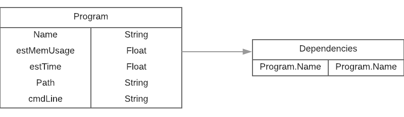
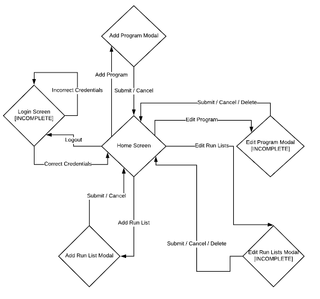

3.1 Overview
There are many parts to this project. Here are the technical details from the requirements page:
- PHP 7
- PHP is the heavy lifter of the project. We have decided to use Laravel to create our website, which allows us to streamline both the frontend development process with the built-in Blade templating engine, as well as the backend development with object-relational mapping to handle database connections and also interacting with the C++ runner program.
- MySQL
- The type of database we settled on using. Our customer uses MySQL for his information gathering programs, so sticking with it for our project will make configuration on his end easier.
- C++
- This is the lowest-level and highest performance part of the project. C++ is used to create multithreaded instances of the processes that our customer needs to run each night. C++11 has a built-in thrading library (not pthreads!), as well as the ability to call arbitrary Linux commands, which allows us to gather runtime data (CPU time, memory usage, etc.) and pass it back to the website.
3.2 Environment
- Server: Debian 3.16.43
- User Environments: Windows 10, Ubuntu 16.04, MacOS 10.12.4
- Database: mysql 5.0.12
3.3 Data Flow
Overall Data Flow
There are 3 main parts to this application. The Database, the Website, and the C++ program. The three are interconnected and their relationship with each other is described in the following diagram:
Database Schema
The Database schema is shown below:

Website Design
The website flowchart is shown below:

C++ Program Design
Below is the flow chart that describes the logic behind the threading program